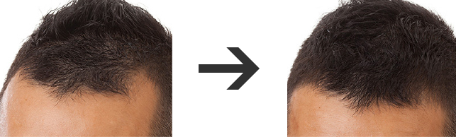

PROFILE
このサイトはM字はげで悩んでいた管理人が実際に試した中で、効果が見られた育毛剤をランキングにしました。
自己紹介
M字はげに長年悩んできまして、約300万使って育毛剤や育毛サロンを試してきました。
効果のあるものに巡り合えずにいましたがやっと効果のある育毛剤を発見しました。
薬用プランテル
M字はげ(M字型)の生え際を克服したい方の専門育毛剤
通常価格9,800円が
8,200円(税込)
送料無料 / 代引手数料無料
購入はコチラから
Ｍ字型ハゲ（M字はげ）の原因は男性ホルモン5α-DHTと言われています。
これが髪の毛の成長を妨げ、抜け毛を増やし、発毛周期の低下を引き起こしています。
「薬用プランテル」はその5α-DHTを発生させないように、３大育毛成分、７種類の自然由来成分がバランスよく配合されている商品です。
その３大育毛成分というのが「センブリエキス」で発毛を促進させ、「セファランチン」で血流促進、「グリチルリチン酸２Ｋ」でフケ・かゆみを抑制してくれます。また自然由来成分配合で頭皮に優しく浸透します。配合成分によって、本来の健康な頭皮環境にしてくれて毛髪の成長を促してくれます。
before→after
| 内容量 | 1日単価 | 厚労省認可 |
|---|---|---|
| 150ml(約50日分) | 約156円 | あり |
| 全額返金保証 | 単価価格 | 使用感 |
| あり | 8,200円(税込) | 無色透明でサラサラとしています。 |
| 使用方法 |
|---|
| 清潔な頭髪に１部分ワンプッシュして揉みこむように優しくマッサージ |
| ３つのポイント |
|---|
|
安全・安心 パラベン・鉱物油・合成着色料などが一切入っておらず、無添加の育毛剤ですので、 安心して使うことができます。 また無香料なので育毛剤特有の匂いも気にせずに使える育毛剤です。厚労省が認めているのは一つの安全基準となります。 |
簡単な使用方法 朝・夜１日２回Ｍ字型（M字はげ）の左右にプッシュして、指の腹を使って揉み込むようにしてマッサージするだけ。忙しい人でも苦にならずに毎日続けることができます。 |
コストパフォーマンス 効果に不安をもっている人でも安心の全額返金制度。容量も多く１本で約５０日使えます。また１本だけでなく定期コースで買えば割引きもあって断然お得!! |
| 管理人がオススメするポイント |
|---|
| 自信の表れだといえる効果がなければ全額返金保証が付いており、厚生労働省認可とありましたので、信用して購入してみました。小さな段ボール箱で届き、商品名や会社名など一切載っておらず、育毛剤と分からないようにしてくれて、こういった心遣いは嬉しかったです。「スタートアップガイド」っていう使い方が入っていて分かりやすかったし、気になるM字部分（M字はげ）に付けるだけととても簡単。付けてみるとほとんど刺激はなく、また嫌な臭いやべたつきなどもなく、逆にさらさらしていていて水のような液体みたいでした。ミスト状なので、液だれはしません。最近では、ふけやかゆみもなくなってきて髪の毛に、ハリ、コシがでてきた感じで効果を実感しています。また１本で約1.5ヶ月使えて、１日あたりの単価も他の育毛剤に比べて安かったので、お財布に優しくて助かります。M字はげで悩んでいる人には、ぜひまずはこれを使ってみて欲しいです。僕はこのまま継続していきたいと思っています。 |
WAKA（ワカ）
M字はげ予防に！生薬100％で作られた育毛剤
【価格】
11,880円（税込）
送料無料
購入はコチラから
M字はげ予防のWAKAは、水を一切入れずに生薬100%をそのままボトルにいれた育毛剤です。
数千を超える組み合わせの中から若年性脱毛症に最適な8種類の生薬成分を配合してます。
「生薬の王」と呼ばれている甘草を主要成分とし、その他にも、「セイヨウハッカ」、「マンネンロウ」、「マンネンタケ」、「センブリ」、「オタネニンジン」、「冬虫夏草」、「カワラヨモギ」などを配合しています。育毛環境メンテナンス⇒ダイレクト育毛⇒頭皮環境ケアし、発毛促進サイクルへと導きます。
| 内容量 | 1日単価 | 厚労省認可 |
|---|---|---|
| 120ml（約1ヶ月分） | 約396円 | あり |
| 全額返金保証 | 単価価格 | 使用感 |
| 90日間 | 11,880円（税込） | サラサラとした使用感。 |
| 使用方法 |
|---|
| 朝晩１日2回乾いた状態で気になる箇所に塗布し、１分程度マッサージ |
| ３つのポイント |
|---|
|
水を一滴も使っていない 生薬の成分を水で薄められていない為、濃度の高い原液100%で作られています。天然素材のみを使って無添加で作られていますので、安心して使用できます。 |
定期コースがお得 20%OFFの9,504円で購入できて、もちろん送料は無料です。2回目以降は注文の手間がかからず、お届け日が指定できます。 |
90日間返金保証 「肌に合わない」、「髪の毛が生えなかった」、「抜け毛が止まらない」と満足いかなければ、 全額返金制度がついているので、安心です。 |
| 管理人がオススメするポイント |
|---|
| 水や不要なものは一切入っていないということで、天然だけあって付け心地はよかったです。若年性脱毛症専門育毛剤とうたっているので、若い人のほうが効果が出やすいのかもしれないです。香料を使っていませんので、独特の漢方薬のような匂いがしました。漢方薬の匂いが苦手だという方にはオススメできません。私は朝つけた後に出かけるのにはちょっと抵抗がありました。でも90日間の返金保証がついているのは嬉しいです。3ヶ月は発毛の様子を見ることができますので、長期で効果を試してみたいという方にはオススメです。 |
濃密育毛剤「BUBKA（ブブカ）」
M字はげなどの育毛の限界に挑戦し続ける育毛剤
【価格】
11,664円(税込)
送料無料
購入はコチラから
M字はげなどの育毛の限界に挑戦する「ブブカ」には、褐藻類のヌメリ成分から濃密に抽出した「Ｍ－０３４エキス」が含まれており、血流を良くする働きがあり必要な栄養を頭皮に届けます。
さらに脱毛の原因をブロックする オウゴンエキスを配合しており、さらに32種類の育毛成分をオリジナルブレンドで配合しています。分子ナノ水にのった育毛有効成分が浸透し、直接毛乳頭に染み込みます。
| 内容量 | 1日単価 | 厚労省認可 |
|---|---|---|
| 120ml（約1～2ヶ月） | 約210円 | あり |
| 全額返金保証 | 単価価格 | 使用感 |
| あり | 11,664円(税込) | 刺激もなくさっぱりしています。 |
| 使用方法 |
|---|
| 朝晩に１日２回気になる部分に付けてマッサージ |
| ３つのポイント |
|---|
|
無香料、無着色、無鉱物油 水のような液体でべたつきやニオイ、刺激などありません。 |
豊富な育毛成分 「Ｍ－０３４エキス」「オウゴンエキス」といった32種類もの育毛成分を配合し、発毛の働きを促します。 |
3,780円相当のサプリメント付 「ノコギリヤシ」「亜鉛」などを配合したサプリメントが付いてきます。１日２粒飲んで発毛を 促進させます。 |
| 管理人がオススメするポイント |
|---|
| 「Ｍ－０３４エキス」という成分に特徴のある育毛剤でべたつきや匂いなどもなく、刺激などもありませんでした。入れ物はボトルタイプのもので直接頭皮に塗るものでした。初め加減がわからなかった為、ドバっと出てきてしまったので、注意したほうがいいです。ヌメリ成分から抽出した成分が入っているということで、もう少しジェル状の液体と思っていましたが、さらさらとした水のような液体でした。注文するとサプリも付いてきて、育毛剤単品だけでもう少し料金を安くしてくれると買いやすいです。料金が少し他の育毛剤と比べても高いので、余裕がないと継続していくのは難しいです。 |
ナノインパクト プラス
M字はげなどに！浸透型発毛促進剤
通常価格7,560円(税込)が
【50%OFF】⇒3,675円(税込)
送料無料 / 代引手数料無料
購入はコチラから
「ホソカワミクロン」「経済産業省」「岐阜薬科大学」の協同プロジェクトで開発された育毛剤で、M字はげでお悩みの方にオススメです。
毛穴の大きさの150万分の1サイズのナノカプセルが、頭皮のすみずみまで直撃し、しっかり浸透させます。
また機能性ナノ粒子「ＰＬＧＡナノカプセル」が毛根にしっかり浸透し、発毛を助けてくれて、従来品の1.5倍のナノカプセルの濃度があります。「酵母エキス」や「アセチル化ヒアルロン酸ナトリウム」「ダイズエキス」などの39種類の成分が配合されており、髪と頭皮に最適なコンディションを作り出します。
| 内容量 | 1日単価 | 厚労省認可 |
|---|---|---|
| 60ml(約1ヶ月分) | 約123円 | なし |
| 全額返金保証 | 単価価格 | 使用感 |
| あり | 3,675円(税込) | さっぱりしてさわやかな感じがします。 |
| 使用方法 |
|---|
| 乾かした清潔な頭皮に揉みこむようにマッサージ |
| ３つのポイント |
|---|
|
発毛促進性能 画期的なナノテク育毛機構である「pH応答性分解機構」と「シュードプラスチック機構」により安定化されたナノカプセルは、頭皮に届いてから分解し始め、成分を補給し続けます。 |
「ナノテク発毛促進メソッド」 肌になじみやすい微細なナノカプセルを配合し、育毛・保湿成分が、頭皮のすみずみまで直撃し、しっかり浸透します。 頭皮の保水力をアップさせて正常な頭皮環境へと導き、ホルモンバランスを正常化させて、発毛を促進し、血流促進、栄養補給のより強い髪を作り出します。 |
新配合の3つの成分と39種類の厳選成分 血流を促進させて栄養補給させる「酵母エキス」や、頭皮の保水力を向上させる「アセチル化ヒアルロン酸ナトリウム」や、ホルモンのバランスを正常化させる「ダイズエキス」など、厳選された39種類の成分が配合されております。 |
| 管理人がオススメするポイント |
|---|
| 浸透力にこだわっているということで、試してみました。メントールの清涼感で確かにスーっと頭皮の隅々までいき届いているように感じられましたが、多少ヒリヒリした感じがしました。 特にツーっとするような嫌な匂いもなく、薬用の匂いがします。また成分量が多く頭皮に良さそうな成分が入ってますので、発毛に効いている感じがしました。ただ、使い方にもよると思いますが、内容量が他の育毛剤と比べて少なく、すぐになくなってしまったのが、残念です。 |
薬用ポリピュアEX
世界各国で”特許”として認められた薬用育毛剤
【価格】
7,800円(税込)
送料：全国一律650円 / 代引手数料無料
購入はコチラから
医学博士が17年もの歳月をかけて開発した新発想の育毛剤です。モンドセレクション金賞を３年連続受賞しているのが、クオリティの良さを証明しております。
毛乳頭へ育毛命令を届ける「ポリリン酸」が、さらに進化を遂げた「バイオポリリン酸」が配合されており、毛乳頭へ直接働きかけています。
また「バイオポリリン酸」は海由来の酵母から生まれた天然ナノサイズだから頭皮への浸透性約２倍、さらに毛乳頭の細胞持続効果は約８.４倍となります。
| 内容量 | 1日単価 | 厚労省認可 |
|---|---|---|
| 120ml(約2ヶ月分) | 約130円 | なし |
| 全額返金保証 | 単価価格 | 使用感 |
| 45日間 | 7,800円(税込) | 匂いやベタつきもなくサラッとした爽やかな感じです。 |
| 使用方法 |
|---|
| 1日2回気になる箇所にプッシュ |
| ３つのポイント |
|---|
|
有効成分「バイオポリリン酸」 海由来の天然酵母から生まれた天然ナノサイズだから、しっかり頭皮に浸透させます。 頭皮を改善するだけでは髪の毛は育ちにくく、「バイオポリリン酸」は毛乳頭に直接発毛指令を出す働きをもっています。 また「バイオポリリン酸」を配合した「薬用ポリピュアEX」は世界各国で”特許”として認められてます。 |
厳選された育毛成分の配合 育毛の有効成分として有名な植物由来の「センブリエキス」を配合しており、血行促進や毛根細胞の活性化効果により発毛作用に働きかけます。 その他にも男性特有の薄毛や抜け毛の原因物質”５αリダクターゼ”の活性化を低下させる為に着目したヒオウギ抽出液も配合されています。 |
低分子コラーゲン入り 保湿効果として、頭皮や育毛に良いと言われている、コラーゲンを低分子化し吸収しやすくしています。そんなコラーゲンは、バイオポリリン酸をより効率よく活動させることが出来ます。 |
| 管理人がオススメするポイント |
|---|
| 毛乳頭に発毛指令を出すバイオポリリン酸という成分が特徴ということで、他の育毛剤とは違うみたいなので、期待して使ってみました。安全性にも定評があるみたいなので、安心して使えそうです。早速、気になるM字はげに塗布してみましたら、ベタつきなどはありませんでしたが、少しヒリヒリと刺激がありました。世界各国で特許として認められて、さらにモンドセレクション金賞という肩書に、使う前からハードルは上がってました。かなり効果を期待していたのですが、思ったほどは効果が実感できなかったような気がしています。 |
チャップアップ
医師も認める数少ない”ホンモノ”の育毛剤
【価格】
7,400円(税込)
送料：660円 / 代引手数料:420円
購入はコチラから
「チャップアップ」はクリニックの育毛剤から商品化されました。海藻の中でもミネラルが多く含まれるミツイシコンブのエキスであるM-034が含まれています。
これは毛包に働きかけ、育毛を促進し脱毛を予防する効果があります。また直接毛根を刺激し、毛根部の血流を促進して毛母細胞の働きを高め、育毛、養毛効果を有するセンブリエキスが含まれています。
それ以外にも厳選した32種類の成分が入っています。育毛効果、頭皮ケアを発揮する植物成分を豊富に配合し、さらに毛根のエネルギー源や毛髪の原料となるアミノ酸類を配合しています。
| 内容量 | 1日単価 | 厚労省認可 |
|---|---|---|
| 120ml(約1ヶ月分) | 約246円 | あり |
| 全額返金保証 | 単価価格 | 使用感 |
| 30日間 | 7,400円(税込) | 匂いやベタつきもなくサラッとした爽やかな感じです。 |
| 使用方法 |
|---|
| １日1回乾かした髪に約30回プッシュして最低１分程度マッサージ |
| ３つのポイント |
|---|
|
全額返金の返金保証書発行 もし１ヶ月使用し、効果が得られなかった場合、商品代金全額を返金する事を約束する保証書がついてきます。全額返金の保証書を発行しているのはチャップアップだけです。 |
クリニックから一般販売 最初はクリックで薄毛相談に来られていた人にだけ販売していましたが、「一般販売してほしい」という声から商品化されました。また発毛協会の会長を務める医師が認めているので、安心して使うことができます。 |
育毛に必要な有効成分を配合 血流低下による栄養不足にも効果を有する成分「センブリエキス」、毛穴の炎症を防止する効果を有する成分「グリチルリチン酸」、血行促進、かゆみを抑えるアレルギー疾患の治療などに用いられる成分「ジフェンヒドラミンHC」が含まれております。頭皮に影響のあるものは一切入ってなく、全３２種類の成分が配合されてます。 |
| 管理人がオススメするポイント |
|---|
| 全額返金保証書がついているのは、実感がなかったら、返金しますという証明書になりますので、これは安心できます。付けてみると刺激やべたつき、匂いなどはまったくなかったです。ただ水みたいで液だれするおそれはあります。１回に３０プッシュと、乾くまでにちょっと時間がかかるので、夜にしか付けられないです。ＡＧＡに効果がありそうな成分が多数入っているのは期待できそうですが、Ｍ字ハゲよりもＯ型ハゲの後頭部には効果が感じられるかなと思います。 |
ヘアーリスペクト
髪の毛を即効で太らせる育毛剤
【価格】
9,800円(税込)
送料全国一律無料
購入はコチラから
今ある痩せた髪を１本１本に働きかけ短期で太く蘇らせ、さらに毛根に働きかけ新しい髪も育てるＷ効果があります。
髪の毛にアミノ酸を入れてあげることで、太くなりますが、そのまま加えても入っていきません。そこでミトコンドリアの活性化を促す育毛の機能性分子群「リプレ」を用いることで、髪の毛の体積を増加させます。群馬産業技術センターで毛髪を分析試験した結果、1.6％のバルーン効果が観測されました。
| 内容量 | 1日単価 | 厚労省認可 |
|---|---|---|
| 100ml(約1ヶ月分) | 約327円 | なし |
| 全額返金保証 | 単価価格 | 使用感 |
| 条件付きであり | 9,800円(税込) | 少し薬品の匂いがし、サラサラしています。 |
| 使用方法 |
|---|
| 清潔で乾いた頭皮に一日２回スプレー |
| ３つのポイント |
|---|
|
バルーン効果 髪の毛は、各種アミノ酸がペプチド結合によって連結されたタンパク質であるため、ミトコンドリアの活性化を促す育毛の機能性分子群「リプレ」を用いることでアミノ酸が入っていき短期間で髪の毛を太くさせ、ボリュームを与えます。 |
貴重な成分「エルゴチオネイン」配合 研究で動物の血液、肝臓などの重要臓器中に多く含まれた成分で抗酸化機能があるため、化粧品などにも利用されている成分です。生命維持に重要な役割を果たしている可能性があり、高価な為、通常育毛剤で使用されているのはヘアーリスペクトだけです。 |
安全性 主原料として主に植物系天然由来原料を使用しており、香料、防腐剤は使ってません。医薬部外品認定に必要なアルコール配合量は徹底的に抑えてます。 |
| 管理人がオススメするポイント |
|---|
| 今ある痩せ細った髪の毛を蘇らせて短期間で太らせるということで使ってみました。細くなると全体の髪のボリュームも減ってしまうので、他の育毛剤ではない太らせるというところが気になりました。使い始めてみて、塗布のスプレーの回数を増やせば、それだけ効果が期待しやすいということでしたので、気になる箇所に何回も吹きかけてつけすぎると液だれがしまして、１ヶ月もたたないうちになくなってしまいました。こちらは単価が高い為、このままのペースで続けていくのは私は難しいです。 |
HAIR DOONE ヘアドーン
毛髪診断士が推奨する新発想の育毛剤！
通常価格12,000円が
7,000円(税込)
送料 / 代引き手数料 / クレジットカード手数料 / 後払い手数料 すべて無料
購入はコチラから
３万人の頭皮を診てきた毛髪診断士が推奨する育毛剤で、育毛に必要な成分がバランスよく配合されています。
無添加で石油系成分や着色料、鉱物など髪に悪い成分が一切入っておらず、32種類全ての成分が表記 されているので、安心です。
抜け毛を抑制する「ミツイシ昆布由来エキス」、体内で作り出すことができない髪の成長に必要な「10種の必須アミノ酸」、頭皮環境を穏やかにする「18種類の植物エキス」が配合されています。
| 内容量 | 1日単価 | 厚労省認可 |
|---|---|---|
| 120ml(約1ヶ月分) | 約233円 | なし |
| 全額返金保証 | 単価価格 | 使用感 |
| 30日間 | 7,000円(税込) | さっぱりしていて、ベタつかず、匂いもほとんどありません。 |
| 使用方法 |
|---|
| 洗髪後、軽く拭き取り、気になる部分に10プッシュ程度ふりかける |
| ３つのポイント |
|---|
|
無添加 合成香料・着色料・鉱物油・パラベン・石油系界面活性剤が無添加で、頭皮に優しく、安心、安全に長く使用することができます。 |
厚生労働省が認めた３種の有効成分 発毛促進・細胞活性・血流促進の効果がある「センブリエキス」と抗炎症作用があり、頭皮を健やかに保つ「グリルチン酸ジカリウム」と抗アレルギー・かゆみ・ふけを抑える「ジフェンヒドラミンHCI」が入っています。 |
品質管理に徹底してこだわっている 原材料の受け入れから製品が完成し出荷するまで、厳しい品質と安全性の審査を行っているGMPから認定された 国内工場で製造されています。 |
| 管理人がオススメするポイント |
|---|
| 毛髪診断士が薦めている育毛剤なので、信頼性はあるかなと思っています。育毛に必要な成分や頭皮の環境を整えてくれる成分がはいっているのがポイントですね。全額返金保証の有効期間が30日ありますので、自分の頭皮に合うか試すのには十分な期間 です。ただ、そこそこする値段なので、継続していくんだったら、他に同じような成分がはいっている値段が安く信頼できる育毛剤で半年間程、試していくほうがいいですね。シャンプーやサプリメントとの併用して使えば、また効果は変わるかもしれないです。 |
リリィジュ
女性のための薬用育毛剤
【価格】
5,076円(税込)
送料無料
購入はコチラから
髪の毛に良いと言われている自然素材を使用しています。生命力が強く、成長も早い植物「桐の葉」のエキスや、古くから薬草として扱われている桑の根の皮から特別の方法で抽出した「桑白皮エキス」を使用しています。
またヒアルロン酸を使うことにより乾燥しやすい頭皮の潤いを保ちますので、保湿力が高まります。「リリィジュ」は研究開発から製造販売までを一貫して、自社で行っておりますから信頼性もあると思います。
| 内容量 | 1日単価 | 厚労省認可 |
|---|---|---|
| 75ml(約1ヶ月分) | 約169円 | なし |
| 全額返金保証 | 単価価格 | 使用感 |
| お試しセットのみ | 5,076円(税込) | ほのかに香る良い匂いで、さっぱりします。 |
| 使用方法 |
|---|
| 頭皮につけて、毛穴に浸透させる |
| ３つのポイント |
|---|
|
古来から髪の毛に良いとされてきた「桐葉」 130種類以上の色んな植物を仮説検証を繰り返し研究をしてきて、選ばれたのが植物保湿成分「桐葉エキス」です。 桐葉は徳島県つるぎ町で育ったものを使っています。 |
特許製法で抽出した「桑白皮エキス」 古くから薬草として使われている桑の根の皮から、独自の抽出方法で取り出した植物保湿成分「桑白皮エキス」です。発毛促進や育毛効果のある4種類の有効成分も配合されています。 |
保湿効果の高い「ヒアルロン酸」配合 乾燥しやすい頭皮の潤いを保ち、優しく保護しながら、頭皮環境を良くしていき、発毛を促進していきます。 |
| 管理人がオススメするポイント |
|---|
| 女性の為の育毛剤ということで、匂いも他の商品と比べて、良い匂いがしました。お試しセットがあり、シャンプー、トリートメントや育毛の為の冊子がセットとなって初めての人でも気軽に試すことができます。また、さすが女性用の育毛剤だけあって、オシャレで液だれがしない容器になっているのはいいですね。女性の方の薄毛原因を研究し、開発された育毛剤なので、女性の方には効果が出やすいのかもしれませんが、やはり男性に使用して効果が出る人は少ないかもしれないです。 |
花蘭咲（からんさ）
貴重な「エビネ蘭」で作られた育毛剤
【価格】
7,560円(税込)
送料全国無料
購入はコチラから
絶滅危惧種に指定されているほどに、貴重な存在の植物「エビネ蘭」を使用しており、また頭皮や毛根への血流に効果があると言われている有効成分の「エビネエキス」を配合してます。
女性で特に高齢者の方に支持されています。こちら以外にも９種類の天然植物エキスをバランスよく配合し、頭皮環境の改善に働きかけています。
| 内容量 | 1日単価 | 厚労省認可 |
|---|---|---|
| 120ml(約45日分) | 約168円 | なし |
| 全額返金保証 | 単価価格 | 使用感 |
| 45日間 | 7,560円(税込) | ニオイも気にならず、べたつき感もなく気持ちよく使えます。 |
| 使用方法 |
|---|
| 洗髪後、１回に２０プッシュ程スプレーし、マッサージ |
| ３つのポイント |
|---|
|
有効成分「エビネエキス」配合 昔から頭皮の血流促進に効果があると言われており、また血流以外にも、頭皮の菌の繁殖を抑えて、フケやかゆみの減少に働きかけます。日本をはじめ、世界13カ国で特許を取得してます。 |
絶滅危惧種に指定されている「エビネ蘭」配合 栄養の詰まった腐葉土であり、植物の育成に大敵である強い西日が当たらない宮崎県の山間部で自然栽培されたものだけにこだわっています。その理由は、自然栽培で育った「エビネ蘭」はバルブ(球根)が大きく、中にはたっぷりの栄養を含んでいます。 |
髪に効果のある9種類の天然植物エキス配合 エビネ蘭以外に、ユズ、エイジツ、ローズマリー、サンザシ、ワレモコウ、チャエキス、センブリ、トウキ、トウガラシチンキといった天然植物エキスが配合されてます。界面活性剤や乳化剤、香料などは一切使用されてませんので、安心して使えます。 |
| 管理人がオススメするポイント |
|---|
| ネットでの評判などをみると女性の方が多く、男性はあまりなかった為、参考になりませんでしたが、一度使ってみました。頭皮の毛穴が開きやすく、育毛剤が浸透しやすいということで、他の育毛剤とはちがい浴室の中で使用してみました。頭皮に入っていく感じがし、気持ちよかったです。また女性の方が使っている人が多い為か、いい匂いがしました。３ヶ月ほど使ってみましたが、ちょっと残念ですが、あまり変化が感じられませんでしたので、継続するのは辞めました。 |
M字はげの原因
～遺伝的な要因～
M字はげには、まずよく耳にする要因の一つは遺伝的な要因が挙げられると思います。M字はげの多い家系、親や祖父からM字はげが遺伝するなどの話を聞き、どうせ自分も将来は・・・と、気にしている人も少なくないと思われます。しかし、遺伝的にM字はげになりやすい体質になる可能性はありますが、 必ずしもM字はげになってしまうわけではありません。太りやすい家系の方でも運動をしていれば太らないのと同じで、ちゃんとケアしてる人はM字はげにもなりません。
～食生活の乱れ、欧米化～
M字はげの身近な要因としては、食生活の乱れです。近年の欧米化している食生活のため、高カロリー・高脂肪の食事が増えており、コレステロールや中性脂肪の増加が頭皮への血行を悪くするほか、頭皮の皮脂が詰まって炎症などの頭皮トラブルにも影響します。それにより、M字はげの原因になってしまうのです。それを防ぐには毛髪をつくるタンパク質、代謝を助けるビタミンやミネラルを摂取できるように、栄養バランスのとれた食事を心がけることが大切です。
～精神的な要因～
M字はげの原因には、意外かもしれませんが、ストレスが大きく影響されるといわれています。精神的なストレスは頭皮の緊張、血行の悪化、過剰な皮脂の分泌に影響するため、M字はげの原因になってしまいます。ストレスの解消は難しいことですが、いいストレス解消法を見つけ出すこともM字はげの予防になると考えるといいと思います。良く食べ、良く寝るということが１番なのかもしれません。
～外的な要因～
M字はげの原因には、ヘルメットや帽子などで頭を覆ってしまうことで、頭皮が蒸れて菌の繁殖や炎症の原因になったり、頭皮の酸欠状態、毛髪へ十分な栄養が行き渡らなくなることも要因だとされています。土建業のお仕事をされている方などは、仕事柄長時間ヘルメットなどを着用しなければならないので、日頃のシャンプーなどで清潔を保つように心掛けましょう。
～睡眠時間の不足～
M字はげの原因の１つに、睡眠不足が挙げられます。睡眠不足は体に悪いだけではなく、毛髪にも悪いのです。睡眠は心身の休息のほか、成長ホルモンの分泌、新陳代謝の促進、免疫力の向上やストレスの除去してくれます。睡眠不足によりこれらが不足すれば、毛髪にも悪影響を起こすのは明らかです。近年は睡眠不足の人が大幅に増え、結果、M字はげ率も大幅に高くなっています。また、毛髪の成長は主に夜間、就寝中に成長するので、毎日十分な睡眠時間をとるようにしましょう。
マッサージ
頭皮マッサージでМ字ハゲを改善しよう
М字ハゲには頭皮マッサージがかなり効果的です。
色々な方法が紹介されていますが、一番簡単でおすすめなのが、両手の指を使ったマッサージ。
両手には力を入れず、指全体を揺するように頭皮をマッサージしていきます。
勿論、爪のケアも忘れずにしておくことも大切です。ポイントは頭皮を傷つけたり、脳を振動させるような刺激は与えないということ。
あくまでも頭皮をマッサージしてあげることが重要で、髪に直接刺激を与える必要はありません。
頭皮マッサージのポイントは血行を良くするということに真の目的があります。
髪は血行がよくなると、栄養分が行き渡るようになり、髪そのものが強くなります。そのための頭皮マッサージであり、このマッサージをサポートするためのシャンプーも市販されています。
数多くのマッサージに適したシャンプーが用意されていますが、その中でも特におすすめな頭皮マッサージシャンプーはホホバオイル。
栄養が多く含まれており、髪に栄養を与えるシャンプーで、頭皮マッサージとしてこれほど適した存在は他にありません。ジャンルとしては育毛剤に分類されるのでリスクも皆無です。
頭皮マッサージは毎日短時間で行っていく事が大切です。過剰に刺激を与えすぎず、しっかりと頭皮の汚れを落としながら、髪を育てていく感覚を養いましょう。
マッサージ方法・育毛のツボ
百会（ひゃくえ）
抜け毛予防、血行促進、ストレス緩和、頭痛や不眠の改善など、様々な病に対して有効な万能ツボです。頭の頂上に位置し、左右の耳の穴を結んだラインと眉間の中心から頭のてっぺんに向けたラインが頭上で交わるところにあります。両手の中指を重ねて、ゆっくりと押し込みましょう。
角孫（かくそん）
頭痛、歯痛、血行促進、抜け毛予防、耳鳴りや眼精疲労に効果があります。耳の上の髪の生え際あたり、耳をぺたんと折り曲げて耳の先端が当たるあたりにあります。左右両方から、頭の中心に向かって押す感じでゆっくり押しましょう。
天柱（てんちゅう）
頭痛、肩こり、抜け毛、疲れ目、ストレスなどの改善、肝臓の働きを活発にするなど、百会と並んで万能ツボで有名。首の後ろの髪の生え際、２本の太い筋の外側にあるくぼみにあります。手のひらで頭を包むようにして親指で指圧しましょう。
風池（ふうち）
頭痛、肩こり、抜け毛、発毛、眼科疾患などに効果があります。うなじの中心にあるくぼみの左右の外側に太い筋肉があり、その筋肉の外側にあります。こちらも天柱と同じく親指で頭の中心に向かって押し込みます。
あ門（あもん）
抜け毛、首のこり改善、血行促進などに効果があります。後頭部の下、うなじの真ん中から２センチほど上の中央のくぼんだところにあります。頭を後ろに傾けると見つけやすくなります。あ門、天柱、風池は近い位置なので、親指を左右にずらす感じで順番に指圧すると効率的です。
玉沈（ぎょくちん）
抜け毛、血行促進、目の疲れ、目まい、鼻詰まり改善などに効果があります。両目から後頭部の平行ラインと頭の中心から指２本分外側のラインが交差したところにあります。位置については個人差もあるので押してみて気持ちいいと感じるポイントを探してみてください。
※ツボを押す時は、息を吐きながら３秒押し、息を吸いながら離す。これを数回繰り返すことで効果がでてきます。
育毛剤の歴史
日本でも世界でも育毛は非常に古くからあり、髪の毛に関する悩みはいつの時代でも大きいようです。
日本の育毛歴
平安時代の頃、長くツヤのある黒髪は美人の条件であったので、女性はお米のとぎ汁で洗うなどの「ヘアケア」が行なわれたり、男性は、髪を結い烏帽子や冠をかぶる「元服の儀*」が行われるなど、髪の毛は、大切に扱われていました。
*奈良時代からある成人の男性を示す儀式
江戸時代になると「毛はえ薬」が登場し、「まげ」を結うようになった庶民たちが、薄毛で「まげ」が結えなくならないよう、「毛はえ薬」で抜け毛、薄げ予防や育毛をしていました。江戸時代の毛はえ薬は、みかんやゆずなどの柑橘類の精油を成分としていたことが知られています。
その後、江戸時代では、散切り頭になり、石鹸を使用。大正時代では、石油が原料のシャンプーで頭を洗うようになり、薄毛対策より洗髪の意識が高まった時代でもありました。
世界の育毛歴
海外では、紀元前１５００年頃の古代エジプトから歴史があります。世界最古の医学書「エーベルス・パピルス」には薄毛の治療法が記載されています。古代ギリシャではオリーブオイルで、ギリシャでは、タマネギと蜂蜜の汁で頭皮を塗り、育毛剤としていたようです。
日本でも流行の「ヘッドスパ」は東南アジアで、伝統医学であるアーユルヴィータはインドで行われていました。西洋ではハーブなどの育毛歴があります。
こうして大昔から育毛は行われており、伝統的な育毛方法は今でも活用されていて、現代でも医学や科学を元に育毛剤が発明されているのです。